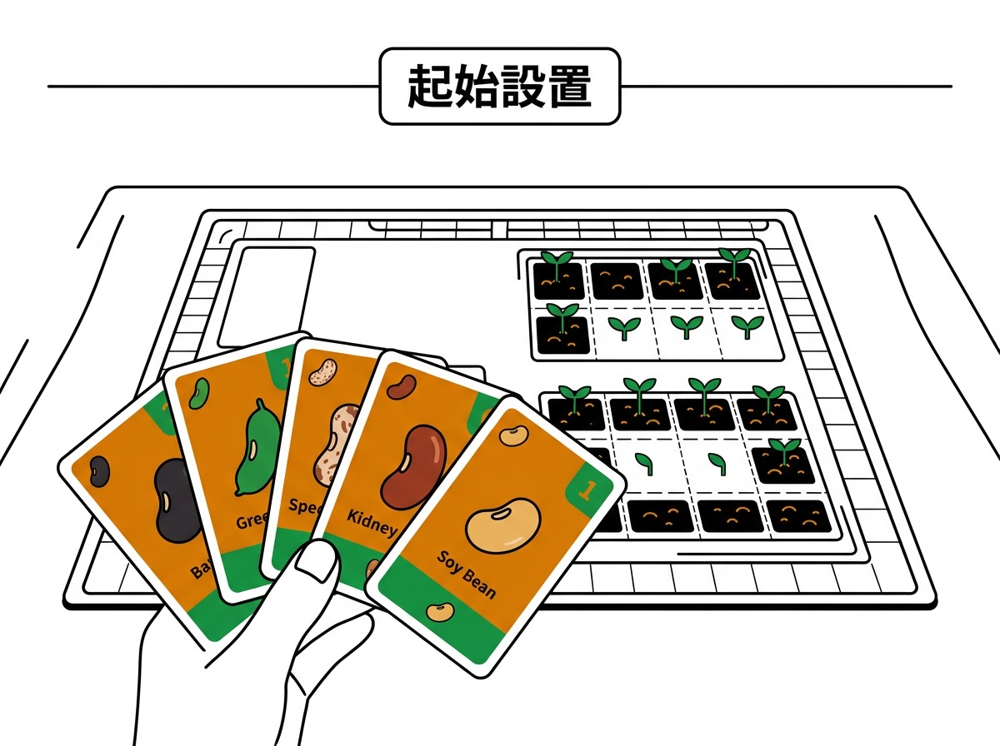
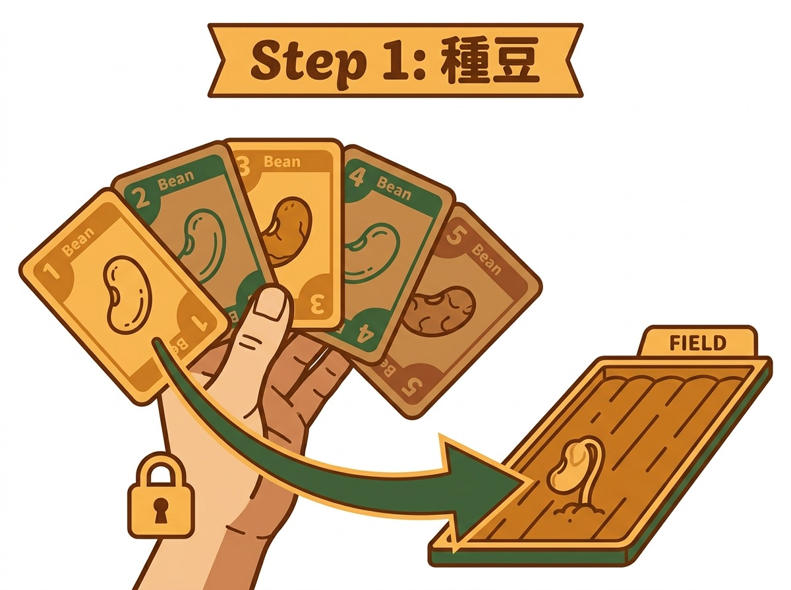
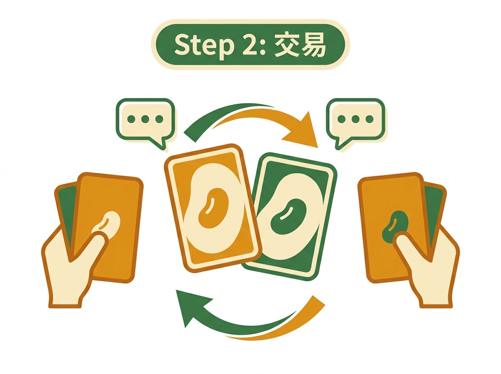
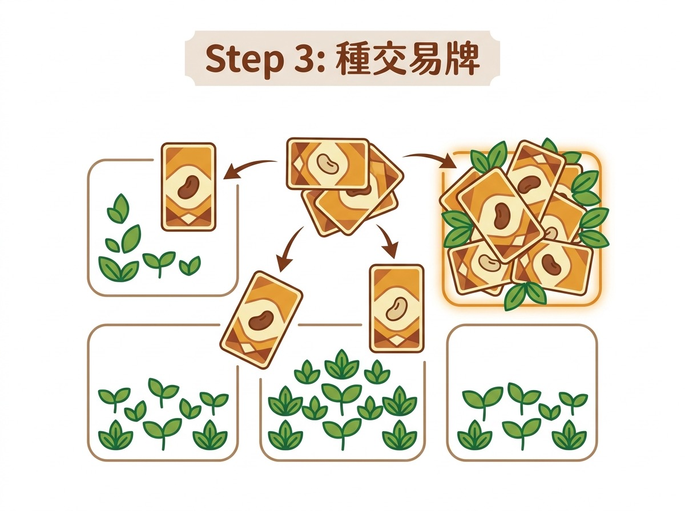
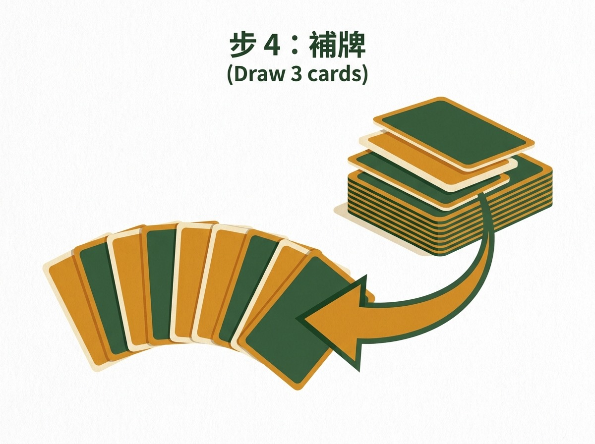
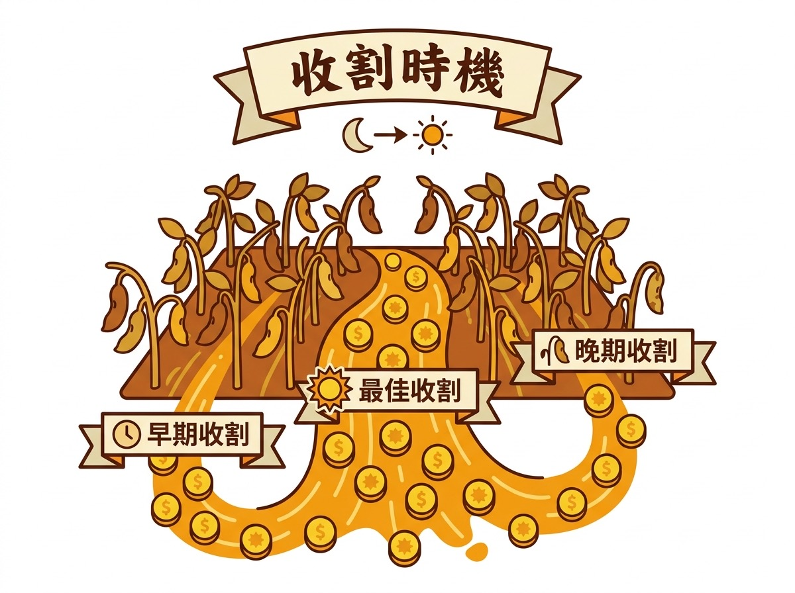
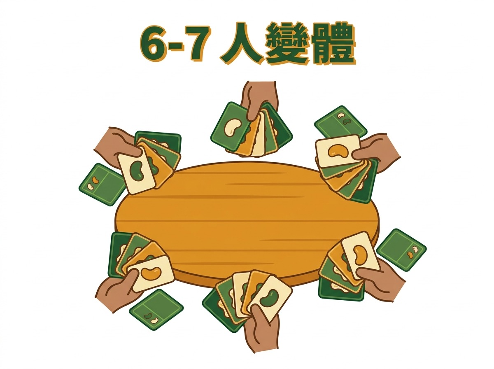
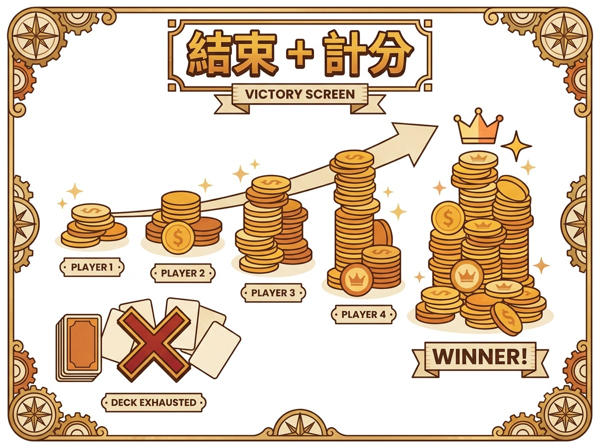

← 返回桌遊列表
✅ 完整教學
牌序鎖死嘅談判遊戲
眾豆得金 (Bohnanza)
出版: Amigo (中文版: 新天鵝堡 / 玩聚設計) · 類別: 談判, 卡牌, 策略
 眾豆得金 (Bohnanza) — Amigo (中文版: 新天鵝堡 / 玩聚設計)
眾豆得金 (Bohnanza) — Amigo (中文版: 新天鵝堡 / 玩聚設計)
🤝
你係一個豆田農夫, 呢個春天你抽到嘅豆決定你成個季節嘅命運。眾豆得金嘅設計天才在於: 「手牌順序不能改變」— 呢個限制迫你同其他農夫不停 trade, 笑料同策略都喺傾計度誕生。
為咩好玩: 🤝 7 人滿場, 旺角夜場吹水 trade 嘅派對首選
⚡ 快速上手 — 2 分鐘上手
新手 2 分鐘內上手, 記住呢 6 條:
- 手牌順序鎖死 — 你抽到嘅牌唔可以重排, 第一張一定要先種
- 每回合 4 步: 種豆 → 交易 → 種交易牌 → 補 3 張牌
- 一塊田一種豆, 田滿 3 張要先收割 (賣晒換金幣)
- 越多豆同一時間賣越值錢 — 紅豆 1 張 2 金, 4 張 9 金
- 3 疊牌玩完 = 遊戲結束, 金幣最多贏
- 💡 善用交易: 牌序鎖死, 唔 trade 就塞死自己
一句話總覽
種豆、交易、收割, 賺最多金幣。手牌順序不能改變, 迫你不斷同其他玩家交易, 製造大量互動。中文版友善, 旺角店大路貨。
玩法步驟圖
步驟 1

步驟 2

步驟 3

步驟 4

步驟 5

步驟 6

步驟 7

步驟 8

步驟 9
牌序鎖死嘅談判遊戲
玩法簡介
眾豆得金係 Uwe Rosenberg 1997 年設計嘅經典談判遊戲, 中文版由新天鵝堡或玩聚設計代理, 旺角多間桌遊店有售。遊戲背景設定喺種豆農夫, 玩家透過種植、交易、收割三種豆田, 賺最多金幣就贏。
眾豆得金嘅核心機制係「手牌順序不能改變」: 你抽到嘅牌排好之後唔可以重新排, 迫你不斷同其他玩家傾掂數, 製造大量互動。呢個設計令成個遊戲冇所謂「輪到自己先做嘢」, 大家成局都傾計同交易, 笑聲連場, 旺角夜場最受歡迎。
呢個 桌遊 適合 2-7 人, 2 人亦可以玩但談判少啲味道。教學時間 15 分鐘, 一局 45-60 分鐘, 難度中等。
完整流程 (逐步)
步驟 1: 設置
每個玩家攞 5 張牌 (3 人以下改 6 張)。牌分三疊 (牌組), 兩疊放喺中央當 牌庫, 剩低一疊第三疊準備之後用。準備金幣: 每個玩家 0 金幣起手, 喺桌上放一個 豆幣庫。準備豆田圖板: 每個玩家 2 塊田, 可以買多一塊 (5 金幣)。每位玩家翻開自己手牌第一張同第二張, 放喺面前公開 (呢個係 眾豆得金 (Bohnanza) 嘅獨特機制 — 起手要公開自己頭 2 張牌俾所有人睇)。
步驟 2: 種豆
輪到你時, 強制要種你手牌「最頂」嗰張 (即你抽到嘅第一張)。如果嗰隻豆田你冇, 你必須做以下其中一個: (a) 種到已有嘅田 (如果田位夠) (b) 買新田 (5 金幣) (c) 將呢隻豆交易俾其他玩家。種豆規則: 一塊田只可以種一種豆, 種到田滿 (3 張同豆) 之前唔可以再種新豆, 必須先收割。
步驟 3: 交易
種完必須種嘅豆之後, 你可以自由同其他玩家交易。交易規則: 必須即時 trade, 唔可以許下「下次再俾」嘅承諾 (雖然實際上都係靠社交默契, 違反承諾嘅玩家之後會被杯葛)。交易可以係一換一, 多換一, 甚至三換一, 視乎談判。交易雙方都要同意, 冇人被迫接 deal。
步驟 4: 種交易牌
將交易得到嘅牌, 用你嘅手牌頂端開始順序種落田。注意: 種田次序係手牌頂→底順序, 唔可以揀邊隻豆先種。所以 trade 之前要諗清楚, 收到嘅牌會唔會塞住你原本嘅牌。
步驟 5: 收割
當你任何一塊田種滿 3 張 (或以上) 相同嘅豆, 必須喺你下一個 turn 開始時先收割。收割方式: 將成塊田嘅豆全部賣俾 豆幣庫, 換金幣。豆嘅價值: 愈多豆同一時間賣, 每張愈值錢。例如咖啡豆, 1 張 2 金, 2 張 5 金, 3 張 8 金, 4 張 11 金, 賣晒成塊田仲有 獎勵 (每種豆唔同, 例如紅豆收成時再多 1 金)。
💡 例子 例: 紅豆收成表 — 1 張 2 金 / 2 張 4 金 / 3 張 6 金 / 4 張 9 金 (4 張有 獎勵)。當你手上有 2 張紅豆, trade 多 1 張先, 邊際收益跳一級。
步驟 6: 補牌
種完豆之後, 從 牌庫 補牌到 5 張 (3 人以下 6 張) 為止。如果 牌庫 用晒, 將第三疊牌洗返轉做新 牌庫, 遊戲繼續。
步驟 7: 結束
玩晒 3 疊牌 (即 牌庫 用完 2 次 + 第三疊 1 次)。金幣最多嘅玩家贏。如果平手, 進入 和局處理 (見下)。
步驟 8: 統計金幣
每個玩家數自己嘅金幣, 加上手上仲未種嘅牌 (每張當 0 金, 但會影響 和局處理), 加上田裏未收嘅豆 (但要扣減未收豆嘅「持倉成本」— 呢個喺 和局處理 段落講)。
戰術提示 (5+ 條)
- 手牌頂嘅牌永遠最優先種: 眾豆得金嘅核心痛苦係, 你抽到唔想種嘅牌都必須先處理。所以起手嗰一刻要諗: 我頭 2 張公開嘅牌, 種唔種得落現有田? 如果唔得, 起手就要諗 trade。唔可以拖, 拖到第三個 turn 你就會被動。
- 「未來承諾」要小心許: Notion 8/8 回顧 提到 眾豆得金 嘅社交層面: 玩家會話「我下個 turn 一定俾你」, 但因為牌序鎖死, 佢真係俾唔俾到要睇佢接住抽到咩。新手要留意: 接受承諾要評估對方手上仲有幾多牌。如果對方手牌已經塞晒, 佢根本俾唔到你想要嘅豆, 個承諾係空嘅。
- 第 3 塊田係 trade currency, 唔係必要投資: 多一塊田 (5 金幣) 看似有 3 個田位, 但實際上你種嘅豆種類愈多, 愈容易塞住手牌。高手打法係集中 2 塊田, 將第 3 塊田嘅 5 金幣留俾 trade currency — 即係當你唔想種某隻豆, 你用 5 金幣「買」對方嘅田位, 對方幫你種然後收割分錢, 雙贏。Notion 回顧 提到呢個係高手常用嘅談判策略。
- 收割門檻 = 3 張, 但 4 張更賺: 紅豆 1 張 2 金 / 2 張 4 金 / 3 張 6 金 / 4 張 9 金 (4 張有 獎勵), 眼利嘅玩家會發現 3→4 嘅邊際收益跳一級。所以當你手上有 2 張紅豆, 唔好急住收割, trade 多 1 張先。但要平衡田位壓力, 如果你塞住手牌就唔可以為咗 3 金 獎勵 拖到塞死自己。
- 多人 (5+人) 場嘅 trade 心理: 5 人以上每個玩家只可以同左右兩個鄰居 trade (冇錯, 眾豆得金 多人場只可以同左右 trade, 唔可以同對面 trade — 呢個係新手最大嘅誤解)。所以你坐邊位影響 trade 機會。坐近「豆倉大」嘅玩家, 佢手上有你需要嘅豆, 呢個就係談判籌碼。新手可以 示範 一個 5 人場嘅 trade 路徑, 否則新手會以為可以飛 trade。
- 「Say no to bad trade」係禁忌: 眾豆得金 嘅 design philosophy 係「人人都有牌想 trade 走」, 所以當有人 propose 一個對你蝕底嘅 trade, 你拒絕嘅代價係你自己塞住手牌, 仲要繼續種壞豆。所以高手寧願接差 trade 都不會全 reject。你可以用呢個例子: 對方用 1 張咖啡豆 (值 2 金) 換你 1 張紅豆 (值 2 金), 看似公平, 但你手上 3 張紅豆無位種, 拒絕等於自爆。
和局處理
眾豆得金 官方規則書 (Amigo 1997, 2017 revision) 嘅 和局處理 規則:
- 主規則: 金幣多者勝。呢個已經喺 步驟 7 結算。
- 平手 (第一次 和局處理): 比較「手上未種嘅牌 + 田裏未收嘅豆」嘅總張數, 多者勝 (因為佢種植/持倉能力更強)。
- 再平手 (第二次 和局處理): 比較「手上未種嘅牌 + 田裏未收嘅豆」嘅總「金幣等值」, 高者勝。
- 再平手 (極罕有): 最後一個 turn 種豆嘅玩家勝 (因為佢成功活到最後一刻, 種植效率最高)。
來源: Bohnanza 規則書 page 16 "「End of the Game」" 段落, 同 BGG comment (BoardGameGeek thread "Bohnanza 和局處理 rules" 確認)。可以再上 BGG: https://boardgamegeek.com/boardgame/11/bohnanza
推介畀咩人
眾豆得金喺旺角嘅定位係「新手進階皆宜, 中文版普及, 多人派對友善」。
- 新手 (✅): 規則聽落簡單 (種豆交易), 但新手 2-3 局先掌握到牌序鎖死嘅痛苦。教學時間 15 分鐘, 第一次玩需要 示範 1 局俾新手睇。
- 進階 (✅✅) + 專家 (✅✅): 談判深度高, 5 人場嘅 trade 路徑選擇可以分析到癲。高手可以計到邊個豆田邊個 turn 收割最化算。
- 家庭 (✅): 7 人以下家庭飯後開一局 OK, 但要預 60 分鐘。
- 朋友群 (✅✅): 旺角最常見場景, 5-7 人吹水 trade 笑料多。
- 情侶 (⚠️): 2 人場可以玩但談判淡, 建議至少 4 人。
- 2 人 (✅): 規則支援但社交體驗弱, 唔係首選。
- 6+ 人 (✅✅): 7 人滿場, 旺角夜場最愛, 派對必備。
旺角新手入門, 問「有咩 5 個人玩, 又可以傾計」, 眾豆得金係首選 — 因為中文版多、規則又易明、傾計自然會多。
玩家 query 對應
- 「我哋 7 個人想開枱, 有咩 桌遊 啱?」: 眾豆得金最多 7 人, 7 人滿場最有氣氛。建議 1 局 60 分鐘內完成, 配合駱駝大賽 (8 人) 開兩局, 旺角夜場 連玩。
- 「新手第一次玩, 揀咩好?」: 眾豆得金難度中等, 但教學友善 (15 分鐘)。新手第一次玩會犯「唔肯 trade」嘅錯, 教學時要 示範 一次 trade 路徑。
- 「我想玩中文版, 唔想睇英文規則」: 眾豆得金中文版有, 旺角多間店有售 (新天鵝堡代理 / 玩聚設計代理)。屬於 眾豆得金 嘅中文友善選擇。
- 「傾計多嘅 桌遊 有咩?」: 眾豆得金設計就係迫你 trade, 傾計多到爆, 旺角朋友群首選。
- 「30 min 內想完一局, 有咩?」: 眾豆得金一局 45-60 分鐘, 30 分鐘會超時。建議改推駱駝大賽 (30 min) 或 dnup (15-20 min)。
特殊規則 / 變體
- 2 人規則: 每人 6 張手牌, 1 疊牌分成兩疊, 種田階段雙方直接 trade, 冇第三個玩家做緩衝。社交體驗弱, 唔建議新手用。
- 3 人規則: 同 2 人類似但多咗一個 trade 對象, 開始有少少談判味。
- 4-7 人規則: 標準規則, 5-7 人最佳。
- House Rule — 第 3 塊田免費: 進階玩家間中會將第 3 塊田由 5 金幣改 3 金幣, 加快遊戲節奏, 但會破壞 5 金幣 trade currency 嘅策略。新手要問清楚玩家用邊一套。
- House Rule — 收割可即時 trigger: 標準規則要等下個 turn 開始先收割, 部分玩家改為種滿即收, 加快節奏。新手建議用標準規則, house rule 等佢哋自己 decide。
- 官方擴充 (Hitze, Bohnröschen 等): 有唔同擴充包加新豆種 / 新機制, 旺角未必有齊, 進階玩家可以上 BGG 查。
參考
- BGG: 眾豆得金
- Notion 8/8 回顧 校稿: 2026-08-08
- 官方規則書: Amigo 1997 / 2017 revision
- 旺角供應: 新天鵝堡 / 玩聚設計中文版
❓ 常見問題
新手最易犯乜錯?
新手會「唔肯 trade」, 結果塞死自己。眾豆得金嘅設計就係迫你 trade, 接受差 trade 比起完全 reject 好。
手牌順序可唔可以重排?
唔可以。呢個係眾豆得金嘅核心, 重排會 break 成個 game。
第 3 塊田幾時買?
新手建議保留 5 金幣做 trade currency, 唔好為咗 3 塊田蝕底。高手會喺 round 3 之後先買。
幾多人最好玩?
5-7 人最佳, 2 人太靜, 3-4 人 OK 但少咗 trade 機會。
幾耐可以教完新手?
15 分鐘教晒, 但新手要玩 2-3 局先掌握牌序鎖死嘅痛苦。第一次玩要示範 1 局俾新手睇。
🛒 配合資源 (Cross-sell)
延伸閱讀
📊 BoardGameGeek 詳細資料 →
← 返回桌遊列表